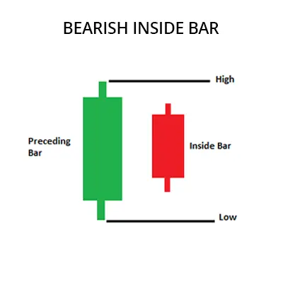

The Bearish Inside Bar pattern is a trading pattern that indicates the end of an upward
direction in the market and signals a downward direction. This pattern is formed by two
candlesticks. The first candlestick is an upward one, and the second candlestick is a
downward one which does not completely encompass the body of the first candlestick and
remains within the opening and closing prices of the first candlestick.